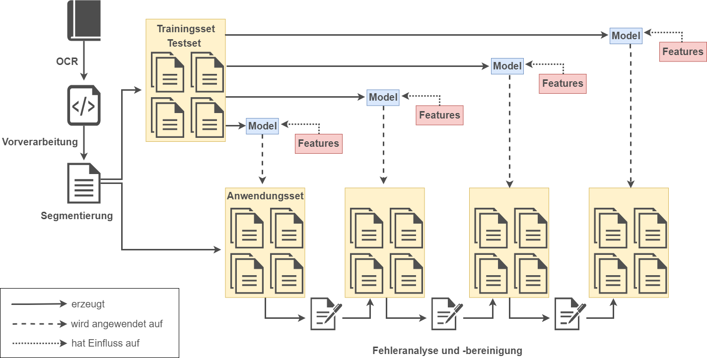
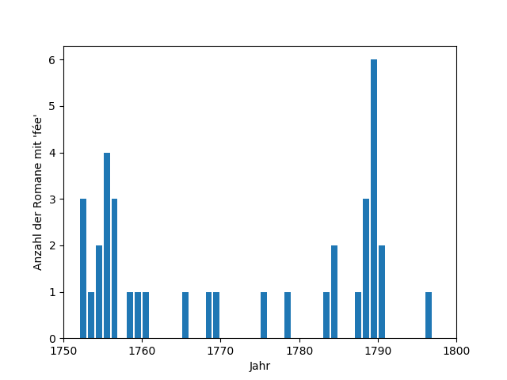

06.03.2020 | DHd 2020 - Spielräume - V17: Linked Open Data 1
Automatische Extraktion und
semantische Modellierung
der Einträge einer Bibliographie französischsprachiger Romane
Andreas Lüschow | Universität Trier / SUB Göttingen
Worum geht's?
Anno 1977: Bibliographie du genre romanesque français 1751-1800
Anno 2020: data.bnf.fr
Was nun?
- gedruckte Vorlage ins Digitale überführen
- Modellierung
- Standards und Vokabulare nutzen
- Anreicherung / Verknüpfung
Wie geschieht's?
Workflow
{kind=link}
{kind=link}
Metadatenextraktion
- Algorithmus: Conditional Random Fields (CRF)
- iterativ
- auf unterschiedlich "tiefen" Metadaten-ebenen
- Genauigkeit: 0.964 (0.908-0.997), F1-Score
6 Modelle
1. Makrostruktur6 Modelle
2. Autorennamen6 Modelle
3. Publikationsdetails6 Modelle
4. Schlagwörter6 Modelle
5. Makrostruktur weiterer Editionen6 Modelle
6. Einzelne weitere EditionenFeatures
| word | einzelnes Wort im Original |
| word.lower | Wort in Kleinschreibung |
| word[-3:], word[-2:], word[-1:] | letzte Zeichen des Wortes |
| word[-1:].isalpha | letztes Zeichen ein Buchstabe? |
| word[:3], word[:2], word[:1] | erste Zeichen des Wortes |
| word[:1].isalpha | erstes Zeichen ein Buchstabe? |
| word.isupper | nur Großbuchstaben? |
| word.istitle | erstes Zeichen ein Großbuchstabe? |
| word.isdigit | nur Zahlen? |
| word.isalpha | nur Buchstaben? |
Transitions (entry)
| Label 1 | Label 2 | Wert |
| s | ti | 2.83 |
| ti | det | 2.70 |
| det | bib | 2.38 |
| ... | ... | ... |
| ti | bib | -1.83 |
States (det)
| Wert | Label | Feature |
| 5.86 | f | word[:2] == in |
| 5.54 | y | word[:2] == 17 |
| ... | ... | ... |
| -3.26 | pl | word[-1:].isalpha |
| -5.75 | pl | -1word[-1:] == , |
{kind=link}
Suominen, O., & Hyvönen, N. (2017). From MARC silos to Linked Data silos?. O-Bib. Das Offene Bibliotheksjournal / Herausgeber VDB, 4(2), S. 2
https://doi.org/10.5282/o-bib/2017H2S1-13
https://doi.org/10.5282/o-bib/2017H2S1-13
Modellierung
Genutzte Ontologien
- FRBR
- DCTerms
- PRISM
- SPAR Ontologies
Überführung in RDF (Apache Jena)

RDF-Modell:
58 412 Tripel
2 628 Einträge
1 108 VIAF-IDs
Und jetzt?
Nachnutzung
- Verarbeitung in anderen Systemen
- Weitere Anreicherung / Verlinkung
- Basis für u. a. buchwissenschaftliche und literaturhistorische Forschung
- ...
Schlagwort fée
{kind=link}
Datenqualität?
- OCR-Fehler
- Falsche Metadatenextraktion (z. B. unklare Labelgrenzen)
- Jahresangaben (1799): thermidor, an 7; an VII (1799 v. st.); an septième; an VII (1799); an VIII; 1799; 1799 (t. I-II) - 1800 (t. III-IV); VIII; (an VII); [an VII]; an VII
Beispiel: Projekt MiMoText
Ziel des Projektes "MiMoText" ist es, den Bereich der quantitativen Methoden zur Extraktion, Modellierung und Analyse geisteswissenschaftlich relevanter Informationen aus umfangreichen Textsammlungen konsequent weiterzuentwickeln [...] Herausforderungen für die Entwicklung eines aus verschiedenen Quellen gespeisten Wissensnetzwerkes [...] primäre Anwendungsdomäne ist die Literaturgeschichte. Es kommen insbesondere Verfahren der Informationsextraktion sowie Linked Open Data / Semantic Web zum Einsatz
(https://www.mimotext.uni-trier.de/aktuelles)
Candide ist das meistgelesene Werk Voltaires und war es wohl schon zu Lebzeiten des Autors. Als es 1759 in Genf erstmals im Druck erschien, wurde es zwar sofort verboten [...] (Erich Köhler)
Voltaire (VIAF:36925746) IS_CREATOR_OF Candide (VIAF: 176620251)
Candide (VIAF: 176620251) HAS_RECEPTION_INTENSITY high
Candide (VIAF: 176620251) HAS_LEGAL_STATUS censored (1759)